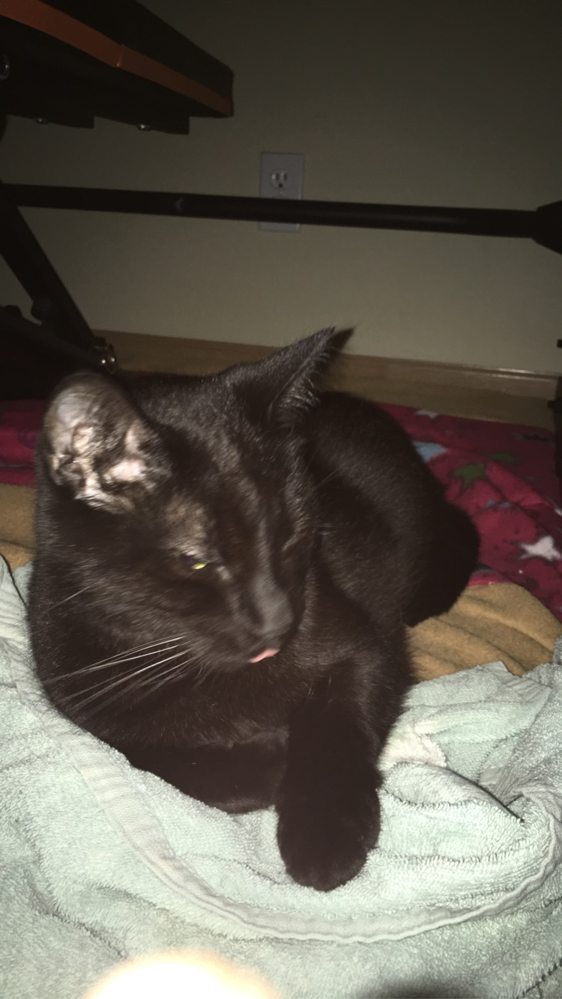
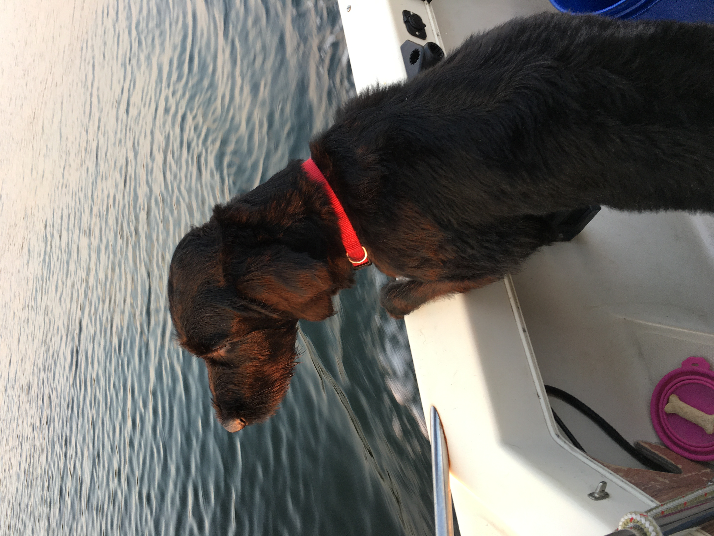

Self care comes in many different forms.
I will mostly focus on physical and emotional self-care in this website.
I like playing ultimate frisbee and lifting weights in my free time.

I play for the school varsity team and when I have more time, will tryout for high level club Ultimate frisbee.
See more about how sports and lifting help me in my sports/physical activity page here.
I will go into detail for both of these more on my other webpages.
Below are my two pets, Guppy the cat and Kudo the dog.
|  |  |
See more of my pets in my gallery page here.